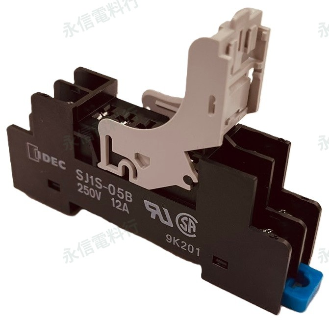

商品照片已套用永信電料行淡綠灰斜向浮水印；點選縮圖可切換實物、銘牌與底部腳位視角。
 IDEC 和泉電氣
IDEC 和泉電氣繼電器插座｜SJ 系列
SJ1S-05B 12A 250V
IDEC SJ 系列薄型繼電器插座，完整型號 SJ1S-05B。本件為 1 極標準螺絲端子型，實物標示 250V 12A；IDEC 官方已標示此型號於 2024/06/28 停產。
完整型號SJ1S-05B
產品類型1 極繼電器插座
端子型式標準螺絲端子
本體額定12A 250V
規格核對提醒
繼電器／插座外觀相近不代表可以直接互換。實際替換前請核對完整型號、線圈電壓或插座型式、接點／腳位、額定與設備配線。
本網站不顯示即時庫存、價格與交期。
PRODUCT OVERVIEW
規格核對重點
- 品牌：IDEC 和泉電氣
- 完整型號：SJ1S-05B
- 系列：SJ 系列
- 維修核對：適用繼電器、極數、端子型式、額定與安裝方式
NAMEPLATE INFORMATION
商品規格表
品牌IDEC 和泉電氣
系列SJ 系列
完整型號SJ1S-05B
產品類型繼電器插座
極數1 極
端子型式標準螺絲端子
本體額定12A 250V
拆卸結構具釋放桿
原廠狀態已於 2024/06/28 停產
商品照片5 張
本頁以你提供的實物照片與可辨識銘牌為第一依據，再以 IDEC 官方完整型號／系列資料補充。未確認的數值不由相近型號推定。
VERIFIED SPECIFICATION DATA
詳細規格
原廠完整型號確認SJ1S-05B
原廠分類SJ 系列繼電器插座
極數1 極
端子標準螺絲端子
系列搭配方向SJ 系列為 RJ 薄型功率繼電器的插座系統
額定12A／250V（實物與 IDEC 認證資料）
重要提醒本頁不將 SJ1S-05B 標示為本批 RR／RU 繼電器專用底座；插座相容性須依完整型號核對
SJ1S-05B 已停產。即使腳位數或外觀接近，也不能推定可搭配 RR／RU 或其他品牌繼電器；請依繼電器完整型號與原廠適用插座資料核對。 系列共通資料僅用於補充辨識，不取代完整型號原廠規格書與本件實物銘牌。